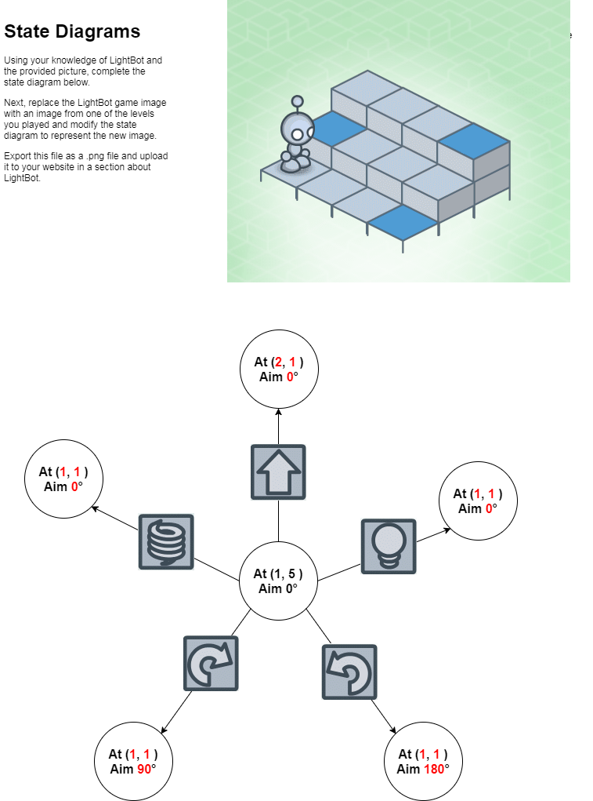

Home
Portfolio
Lightbot
This is my Lightbot Journal
I feel like the main difference between the computer and lightbot is that lightbot requires an imput for everyone of his actions where as a computer kind of just does stuff.
Lightbot cant move without the user giving him instructions meanwhile the computer does its own thing once you click some things. I suppose one thing they have in common is they are both not alive.
